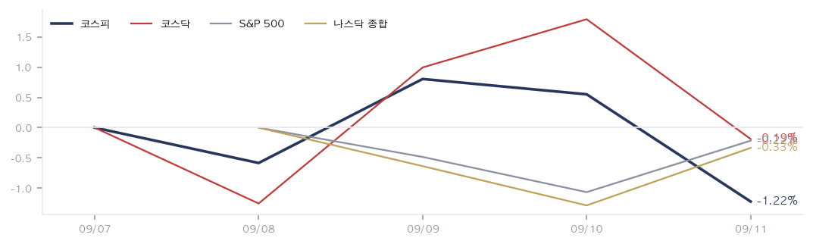
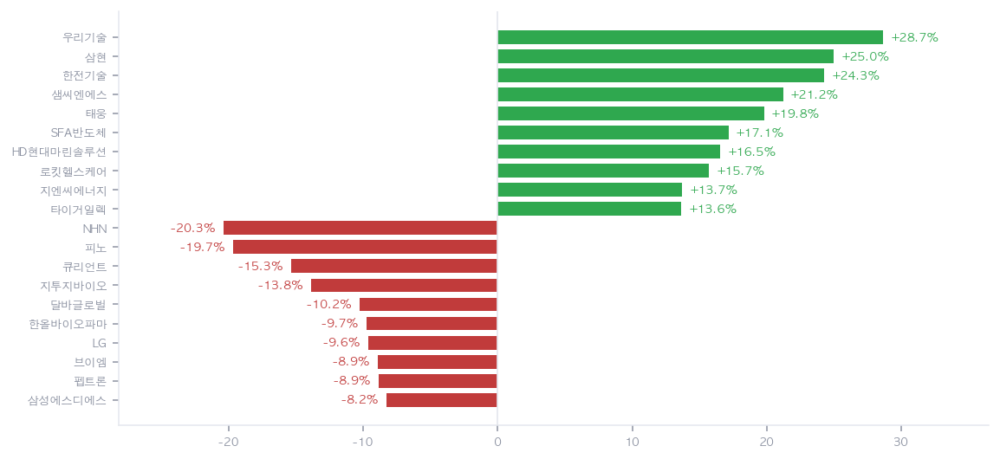
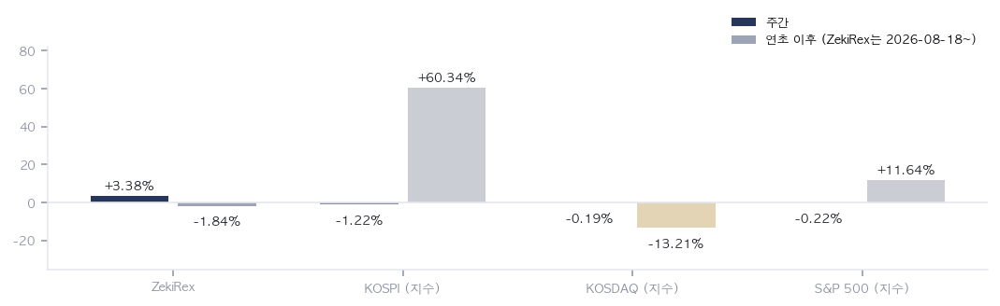

|
ZekiRex™ Apex KR 주간 총결산 9/7~9/11
한 주가 남긴 것 · 1/2
데이터 기준 9/11 종가 |
ZekiRex™ |
|
|
| • | 발송 지연 발송이 늦었습니다. 양해를 구합니다. 수치는 한국 9/11 종가 그대로입니다. | | • | 업종 지도 제외 업종 분류 자료가 비어 있어 이번 주는 업종 히트맵을 싣지 않았습니다. |
| |
한 주를 한 문장으로. 금리가 한국 주식의 값을 정한 한 주였습니다. 국고채 3년물이 34개월 만에 4%를 넘었다고 매일경제가 전했습니다. 코스피는 금요일 1.76% 내려 7,000선을 내줬습니다. 주간으로는 1.22% 하락한 6,910입니다. 코스닥은 0.19% 내린 821로 거의 제자리였습니다. 바깥에서 온 힘은 기름값입니다. WTI는 한 주에 7.48% 올라 배럴당 100.0달러에 마감했습니다. 미 국채 10년물은 0.17%p 높아진 4.97%입니다. 실적이 아니라 할인율이 값을 매긴 주간입니다. |
| 이번 주 반드시 알아야 할 5가지 | 한 주에 일어난 일 가운데 돈에 영향을 준 것만 5가지입니다. 각 항목은 사실, 왜 그런가, 그래서 무엇인가 순입니다. | 1 | 국고채 3년물이 34개월 만에 4%를 넘었습니다 사실 매일경제는 국고채 3년물 금리가 34개월 만에 4%를 넘었다고 전했습니다. 같은 날 코스피는 1.76% 내려 7,000선을 내줬고, 연합뉴스는 금리와 환율이 함께 올랐다고 보도했습니다. 왜 국내 금리가 이미 4%대라면 주식의 기대수익이 채권과 겨뤄야 합니다. 지수가 한 주에 1.22% 내리는 동안 저희가 보는 350종목의 평균은 0.22% 하락에 그쳤습니다. 무거워진 쪽은 시장 전체가 아니라 대형주였습니다. 행동 — 국내 주식을 들고 계시다면 지수 수준보다 본인 종목의 금리 민감도를 먼저 보십시오. 이익이 먼 미래에 몰린 회사일수록 같은 금리 상승에 더 깎입니다. 다만 금리가 4%대에서 더 갈지는 아직 판정되지 않았고, 그 판정은 다음 주 미국 회의에서 나옵니다. | | 2 | 기름값이 한 주에 7.48% 올랐습니다 사실 WTI는 주간 7.48% 올라 배럴당 100.0달러에 마감했고, 이번 표에서 가장 크게 움직였습니다. 사우스차이나모닝포스트는 호르무즈 해협을 우회하는 사우디 송유관이 공격을 받아 폐쇄됐다고 전했습니다. 왜 공급 경로가 한 곳으로 좁아지면 기름값의 위쪽 위험이 커집니다. 이번 상승은 수요가 좋아서가 아니라 공급이 막혀서 생긴 것입니다. 경기 신호로 읽으면 안 되는 종류의 상승이며, 물가 기대를 통해 금리로 돌아옵니다. 행동 — 정유와 조선, 해운을 들고 계시다면 이번 상승은 파는 값 쪽 재료입니다. 항공과 화학에는 같은 기름값이 원가로 들어옵니다. 한 사건이 보유 종목에 따라 정확히 반대로 작동하므로, 본인 계좌에서 기름값이 매출로 들어오는 쪽과 비용으로 들어오는 쪽을 나눠 보십시오. | | 3 | 미국 8월 물가가 3.4%로 나왔습니다 사실 씨비에스뉴스는 8월 소비자물가 상승률이 3.4%로 나오며 이달 금리 인상 가능성이 커졌다고 전했습니다. 블룸버그는 더들리 전 뉴욕 연방준비은행 총재가 0.25%포인트 인상을 예상했다고 보도했습니다. 왜 시장이 연준에 대해 인하가 아니라 인상을 말하기 시작했습니다. 값이 아니라 값을 지탱하던 전제가 바뀐 것입니다. 인하를 깔고 세워 둔 판단은 전제부터 다시 보셔야 합니다. 행동 — 성장주와 장기채, 그리고 빌린 돈으로 산 부분이 본인 계좌에 얼마나 되는지 지금 확인해 보십시오. 세 가지 모두 금리가 오르는 쪽에서 먼저 깎입니다. 다만 인상은 아직 예상이지 확정이 아니며, 다음 주 회의 전에 비중을 크게 바꾸는 것은 판정되지 않은 사건에 베팅하는 일입니다. | | 4 | 원유는 내렸는데 경유는 최고치를 썼습니다 사실 블룸버그는 금요일 국제유가가 내렸다고 전했습니다. 씨비에스뉴스는 같은 날 경유가 갤런당 6달러로 최고치를 썼다고 보도했고, 악시오스는 그 비용이 식품과 운송으로 옮겨 간다고 했습니다. 왜 원유가 내려도 경유가 최고치면 물가 압력은 그대로 남습니다. 원유는 금융시장에서 먼저 움직이고 경유는 실제 수송과 난방에서 늦게 따라옵니다. 금요일 원유 하락을 물가 완화로 읽으면 이릅니다. 행동 — 운송비가 원가에서 큰 비중을 차지하는 회사를 들고 계시다면 원유보다 경유를 보십시오. 택배와 항공, 식품 가공이 그렇습니다. 원유 가격만 보고 원가 부담이 풀렸다고 판단하면 분기 실적에서 어긋날 수 있습니다. | | 5 | 지수는 1.22% 내렸는데 종목 평균은 0.22% 하락입니다 사실 저희가 보는 350종목이 모두 닷새를 거래했고 평균은 0.22% 하락입니다. 같은 기간 코스피는 1.22%, 코스닥은 0.19% 내렸습니다. 종목 평균이 코스피보다 1%p 나았습니다. 왜 지수는 시가총액으로 무게를 답니다. 그래서 대형주가 내리면 지수가 시장보다 더 나빠 보입니다. 이번 주가 정확히 그 경우이며, 코스닥이 거의 제자리였던 것도 같은 사실의 다른 얼굴입니다. 행동 — 지수 하락만 보고 본인 종목도 같이 내렸다고 짐작하지 마십시오. 계좌를 열어 실제 등락을 확인하는 편이 빠릅니다. 반대로 지수가 오른 주에 본인 종목이 오르지 않는 일도 같은 이유로 생깁니다. |
|
| 한 주 총결산 | | 지표 | 금요일 종가 | 주간 | 연초 이후 | | 코스피 | 6,910 | -1.22% | +60.34% | | 코스닥 | 821 | -0.19% | -13.21% | | S&P 500 | 7,657 | -0.22% | +11.64% | | 나스닥 | 26,333 | -0.33% | +13.33% | | 비트코인 | $77,209 | -2.38% | -12.99% | | 원/달러 | ₩1,343.30 | -0.27% | -7.15% | | 미 국채 10년 | 4.97% | +0.17%p | +0.79%p | | WTI 원유 | $100.0 | +7.48% | +74.44% | | 금 | $4,390 | -0.09% | +1.75% |
주간 등락은 한국 9/4 종가에서 한국 9/11 종가까지 5거래일을 잰 값입니다. 미국 지수와 원자재는 같은 기간의 현지 종가입니다. 이번 표에서 가장 크게 움직인 것은 WTI입니다. 사우스차이나모닝포스트는 호르무즈 해협을 우회하는 사우디 송유관이 공격을 받아 폐쇄됐다고 전했습니다. 우회로가 막히면 해협 자체의 무게가 커집니다. 원/달러는 0.27% 내린 ₩1,343.30으로 원화가 조금 강해졌습니다. 이 값은 9/11 15:30 KST 서울 마감 기준입니다. |
| 한 주 움직인 것 | 주간 전체를 거래한 350종목 기준 · 따라가는 종목 350개 그 주 오른 종목 | 우리기술 032820 | +28.66% | | 삼현 437730 | +24.96% | | 한전기술 052690 | +24.28% | | 샘씨엔에스 252990 | +21.20% | | 태웅 044490 | +19.79% | | SFA반도체 036540 | +17.14% | | HD현대마린솔루션 443060 | +16.51% | | 로킷헬스케어 376900 | +15.71% | | 지엔씨에너지 119850 | +13.71% | | 타이거일렉 219130 | +13.62% |
| 그 주 내린 종목 | NHN 181710 | -20.34% | | 피노 033790 | -19.66% | | 큐리언트 115180 | -15.34% | | 지투지바이오 456160 | -13.84% | | 달바글로벌 483650 | -10.23% | | 한올바이오파마 009420 | -9.73% | | LG 003550 | -9.64% | | 브이엠 089970 | -8.90% | | 펩트론 087010 | -8.86% | | 삼성에스디에스 018260 | -8.25% |
|
저희가 보는 350종목이 모두 닷새를 거래했고 평균은 0.22% 하락입니다. 지수는 그보다 1%p 더 내렸습니다. 종목 평균이 지수보다 나았다는 것은 지수를 끌어내린 쪽이 대형주였다는 뜻입니다. 오른 쪽은 우리기술 28.66%, 삼현 24.96%, 한전기술 24.28% 순입니다. 내린 쪽은 NHN 20.34%, 피노 19.66%, 큐리언트 15.34% 순입니다. 위쪽 열 자리는 전력·원전과 반도체로 묶이고, 아래쪽 열 자리에는 바이오가 4개입니다. 한쪽은 지금 현금을 버는 사업이고, 다른 쪽은 이익이 먼 미래에 있습니다. |
| 보유 종목의 한 주 | | 종목 | 금요일 종가 | 주간 | 평가손익 | 손절가 | 손절 여유폭 | | 한국콜마 161890 | ₩141,300 | -2.08% | -3.09% | ₩134,136 | +5.3% | | 신한지주 055550 | ₩112,900 | -0.27% | -0.88% | ₩104,788 | +7.7% | | GS 078930 | ₩119,000 | -5.25% | +2.41% | ₩106,904 | +11.3% | | 샘씨엔에스 252990 | ₩15,780 | +21.20% | +22.52% | ₩11,850 | +33.2% |
보유 4종목입니다. 샘씨엔에스만 주간 21.20% 올랐습니다. 신한지주 0.27%, 한국콜마 2.08%, GS 5.25% 하락입니다. 계좌는 주간 3.38%로 코스피보다 4.60%p 앞섰습니다. 앞선 이유를 그대로 말씀드리면 종목 하나입니다. 4종목을 같은 크기로 들고 있어 샘씨엔에스가 계좌에 더한 몫이 5.30%p이고, 나머지 3종목이 1.90%p를 덜어냈습니다. 4개 가운데 3개가 내린 주에 계좌가 오른 것입니다. 같은 구조는 반대로도 작동합니다. 손절 여유폭은 한국콜마가 5.34%로 가장 좁고, 샘씨엔에스가 33.17%로 가장 넓습니다. |
|
|
다음 주를 위한 것 · 2/2
데이터 기준 9/11 종가 |
ZekiRex™ |
|
|
| 그 밖에 알아야 할 것 | | 뉴욕 증시, 닷새 만의 반등 · 매일경제는 금요일 뉴욕 증시가 닷새 만에 반등해 다우지수가 1% 올랐다고 전했습니다. 인베스터스비즈니스데일리도 주간 낙폭을 줄인 마감이라고 정리했습니다. (매일경제 · Investor's Business Daily) → 나흘 연속 하락을 끊은 자리입니다. 다만 채권이 따라오지 않아 추세 전환으로 부르기에는 이릅니다. | | 같은 한 주를 두고 결론이 갈렸습니다 · 월스트리트저널은 금리가 더 높아지더라도 연준의 경로가 분명해진 것을 시장이 반겼다고 썼습니다. 매일경제는 같은 기간을 긴축이 빨라지며 코스피가 상자에 갇힌 국면으로 읽었습니다. (Wall Street Journal · 매일경제) → 같은 사실을 미국은 확인된 조건으로, 한국은 자금이 빠져나가는 통로로 봤습니다. 어느 쪽이 맞는지는 환율과 외국인 수급에서 먼저 드러납니다. | | 경유가 갤런당 6달러로 최고치 · 씨비에스뉴스는 금요일 경유가 갤런당 6달러로 최고치를 썼다고 보도했고, 악시오스는 그 비용이 식품과 운송으로 옮겨 간다고 했습니다. (CBS News · Axios) → 원유가 내린 날에 경유가 최고치를 쓴 것은 물가 압력이 실물 쪽에 남아 있다는 뜻입니다. 택배와 항공, 식품 가공의 원가에 먼저 닿습니다. | | 호르무즈 우회 송유관 폐쇄 · 사우스차이나모닝포스트는 호르무즈 해협을 우회하는 사우디 송유관이 공격을 받아 폐쇄됐다고 전했습니다. 우회로가 막히면 해협 자체의 무게가 다시 커집니다. (South China Morning Post) → 공급 경로가 한 곳으로 좁아지면 기름값의 위쪽 위험이 커집니다. 이번 주 기름값 7.48% 상승의 근거가 여기에 있습니다. | | 이번 주 읽은 매체는 한국과 해외를 함께 봤습니다. 한 기사만 근거인 항목은 그렇게 적었습니다. |
| 한국과 미국을 잇는 것: 이번 주의 연결 고리는 기름값입니다. 공급이 막혀 오른 기름값이 물가 기대를 밀어올렸고, 그것이 미국과 한국의 금리를 함께 끌어올렸습니다. 국고채 3년물이 34개월 만에 그 문턱을 넘은 것과 코스피가 7,000선을 내준 것은 같은 사건의 두 얼굴입니다. 금요일 뉴욕에서 기름값은 내렸고 지수는 올랐지만 채권은 따라오지 않았습니다. 서울이 다음 거래일에 받는 것은 위험 선호의 회복이 아니라 기름값만 빠지고 금리는 그대로인 상태입니다. |
 월요일 종가를 0으로 놓고 그린 닷새입니다. 코스피는 1.22% 내렸고 코스닥은 0.19% 내려 거의 제자리였습니다. 두 선이 갈라진 곳이 이번 주의 핵심입니다. 대형주가 몰린 코스피만 금요일에 꺾였다는 뜻이며, 따라서 지수 하락을 시장 전체의 하락으로 읽으면 안 됩니다. |
 저희가 보는 350종목의 주간 등락 위아래 열씩입니다. 오른 쪽 열 종목은 13.62% 이상 올랐고, 내린 쪽 열 종목은 8.25% 이상 내렸습니다. 오른 폭이 더 큽니다. 위쪽은 전력·원전과 반도체로 묶이고 아래쪽에는 바이오가 4개입니다. 상승도 하락도 업종 사건이었다는 뜻이며, 따라서 종목보다 금리 방향을 먼저 확인해야 합니다. |
 한국 9/4 종가에서 한국 9/11 종가까지 같은 기간으로 잰 주간 수익률입니다. 계좌 3.38%, 코스피 -1.22%, 코스닥 -0.19%입니다. 계좌를 앞서게 한 것은 샘씨엔에스 21.20% 하나이며, 나머지 3종목은 모두 내렸습니다. 4종목을 같은 크기로 들면 한 종목이 계좌의 4분의 1을 좌우한다는 뜻입니다. |
| 다음 주 반드시 알아야 할 5가지 | 이번 주 시사점에서 이어지는 5가지입니다. 무엇을 보면 되는지까지 적었습니다. | 1 | 9/15~9/16 미국 통화정책 회의가 기울기를 판정합니다 사실 미국 통화정책 회의가 9/15~9/16에 열립니다. 8월 소비자물가가 3.4%로 확인된 뒤 열리는 첫 회의이며, 블룸버그는 0.25%포인트 인상을 예상하는 견해를 전했습니다. 왜 이번 주 기울기를 만든 것이 물가와 기름값이었으므로, 그 기울기를 확인하거나 되돌리는 자리도 여기입니다. 국내 금리가 이미 4%대라는 사실과 곧바로 이어집니다. 행동 — 성장주와 장기채 비중을 바꿀 계획이 있다면 이 회의 뒤가 정보가 가장 많이 늘어나는 자리입니다. 그 전에 움직이는 것은 아직 판정되지 않은 사건에 미리 베팅하는 것과 같습니다. | | 2 | 기름값이 되돌려지는지, 호르무즈가 정합니다 사실 WTI는 주간 7.48% 올라 배럴당 100.0달러로 마감했고, 금요일 하루는 내렸습니다. 우회 송유관 폐쇄가 이어지는지에 대한 해제 일정은 나와 있지 않습니다. 왜 이번 주 오른 전력·원전과 정유의 근거가 여기에 걸려 있습니다. 기름값이 물가로 넘어가면 금리 부담이 다시 커지고, 같은 경로로 바이오와 정보기술 서비스가 내립니다. 행동 — 정유와 해운 비중이 있다면 기름값이 그 근거이므로 호르무즈 관련 보도를 근거 점검 항목으로 두십시오. 항공과 화학은 같은 소식이 반대로 작동하며, 두 쪽을 함께 들고 있다면 서로 상쇄됩니다. | | 3 | 국고채가 4%대에 머무는지 사실 국고채 3년물이 34개월 만에 4%를 넘었다고 매일경제가 전했고, 연합뉴스는 같은 날 금리와 환율이 함께 올랐다고 보도했습니다. 원/달러는 주간으로는 0.27% 내린 ₩1,343.30입니다. 왜 금리가 4%대에 머물면 대형주에 실린 부담이 다음 주에도 이어집니다. 이번 주 지수가 종목 평균보다 나빴던 이유가 그것이므로, 같은 구도가 반복되는지를 보면 됩니다. 행동 — 은행 예금과 채권의 이자가 올라가면 주식이 그것과 겨뤄야 합니다. 본인 계좌의 기대수익을 지금 금리와 나란히 놓고 보십시오. 배당이 주된 이유였던 종목은 특히 다시 계산해 볼 자리입니다. | | 4 | 금요일 뉴욕 반등이 추세인지 사실 매일경제는 금요일 뉴욕 증시가 닷새 만에 반등해 다우지수가 1% 올랐다고 전했습니다. 인베스터스비즈니스데일리도 주간 낙폭을 줄인 마감이라고 정리했습니다. 왜 나흘 연속 하락을 끊은 자리입니다. 다만 기름값이 내린 날의 반등이라 금리가 따라 내리지 않으면 근거가 약합니다. 서울이 다음 거래일에 받는 것은 기름값만 빠지고 금리는 그대로인 상태입니다. 행동 — 하루의 반등을 방향 확정으로 읽지 마십시오. 확인은 금리가 함께 내리는지에 있습니다. 국내 주식 비중을 조정할 생각이라면 회의가 지난 뒤가 정보가 더 많은 자리입니다. | | 5 | 내린 바이오가 되돌아오는지 사실 주간 하위 열 자리 가운데 4개가 바이오였습니다. 큐리언트 15.34%, 지투지바이오 13.84%, 한올바이오파마 9.73%, 펩트론 8.86% 하락입니다. 왜 이들이 내린 이유는 개별 실적이 아니라 금리 기울기였습니다. 그렇다면 되돌아오는 이유도 실적이 아니라 금리이며, 그 방아쇠는 9/15~9/16 회의입니다. 행동 — 낙폭이 크다는 이유만으로 담는 것은 금리 방향에 베팅하는 것과 같습니다. 내린 이유가 할인율이었다면 회복도 할인율에 달려 있다는 뜻입니다. 회의 뒤에 확인하고 판단하는 선택지를 함께 두십시오. |
|
| 다음 주 핵심 | | 9/15~9/16 (화~수) | 미국 통화정책 회의 (결정은 9/16 14:00 ET, 현지시간) 8월 소비자물가 3.4% 뒤 첫 회의로, 이번 주 기름값과 금리가 만든 기울기를 확인하거나 되돌립니다. | | 9/18 (금) | 미국 주가지수 선물·옵션 동시 만기 (9/18 현지시간) 만기 주간에는 지수 변동이 커집니다. 회의 이틀 뒤라 회의 결과가 수급으로 증폭되는 자리입니다. | | 일정 미정 | 호르무즈 우회 송유관 재개 여부 사우스차이나모닝포스트는 공격으로 폐쇄됐다고 전했고 해제 일정은 나와 있지 않습니다. 기름값의 위쪽 위험이 여기에 걸립니다. | | 일정 미정 | 국고채 3년물의 4%대 유지 여부 34개월 만의 4%대입니다. 머무르면 대형주에 실린 부담이 다음 주에도 이어집니다. |
|
다음 주를 어떻게 볼 것인가. 오른 종목과 내린 종목을 나란히 놓으면 성격이 분명합니다. 위쪽에는 전력과 원전이 있습니다. 우리기술 28.66%, 한전기술 24.28%, 태웅 19.79%, 지엔씨에너지 13.71%입니다. 반도체도 함께 올랐습니다. SFA반도체가 17.14% 올랐고, 샘씨엔에스도 상승 상위에 들었습니다. 아래쪽은 다릅니다. 큐리언트 15.34%, 지투지바이오 13.84%, 한올바이오파마 9.73%, 펩트론 8.86% 하락으로 바이오가 4개입니다. NHN 20.34%, 삼성에스디에스 8.25% 하락으로 정보기술 서비스도 끼어 있습니다. 이익이 먼 미래에 있는 회사일수록 금리가 오를 때 먼저 깎입니다. 다음 주 9/15~9/16 미국 통화정책 회의가 이 기울기를 확인하거나 되돌립니다. |
| 출처: 한국거래소(KRX) 공시 시세, 15:30 종가 · 서울 외국환중개 고시 환율 · Yahoo Finance, 16:00 ET · 매일경제·연합뉴스 · Bloomberg·CBS News·Axios·Wall Street Journal·South China Morning Post·Investor's Business Daily |
|
본 리포트는 정보 제공 목적이며 개별 투자 자문이 아닙니다. ZekiRex™ Apex KR는 10억 원 규모의 모의 포트폴리오를 규칙 기반으로 운용합니다 — 실제 계좌도, 주문도, 체결도 없습니다. 표시된 성과에는 수수료와 세금, 매매 시 가격 미끄러짐이 반영되지 않았습니다. 종목 자료에는 상장폐지된 회사가 빠져 있습니다. 그래서 성과가 실제보다 높게 나오는 치우침(생존편향)이 있습니다. 과거의 성과는 미래를 보장하지 않으며, 투자에는 원금 손실 위험이 따릅니다. |
| This is the Rex Way, ZekiRex™ |
|